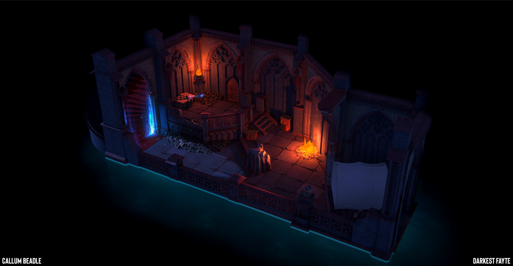

Darkest Fayte: Sanctum
An in-house game project at Digital Salmon, and a real learning experience. I was responsible for art directing the game, and for all environment work and level design.
All assets were created in Houdini and textured using Substance Designer. I created a modular environment kit to build expansive dungeons and maps to explore.
- Role
- Art direction, environment work and level design
- Context
- Digital Salmon
- Tools
- Houdini, Unity, Substance 3D Designer, Photoshop
Credits
- VFX:Sam Mayson
- Help generating the floor in Houdini:Benjamin Salmon